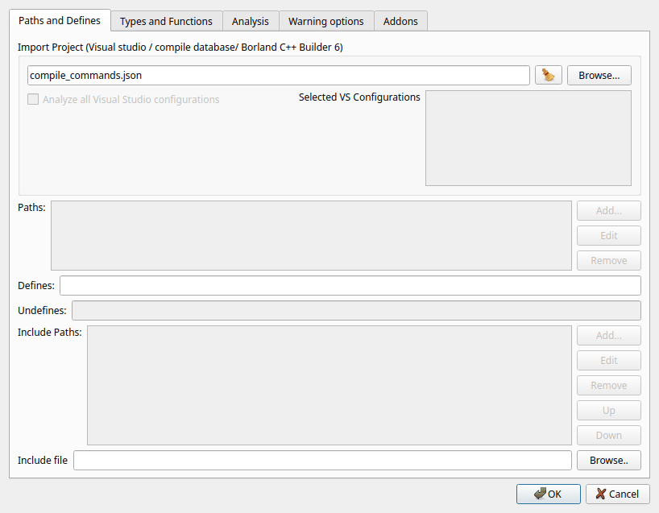
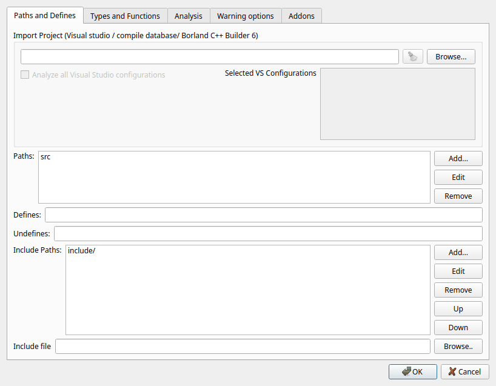
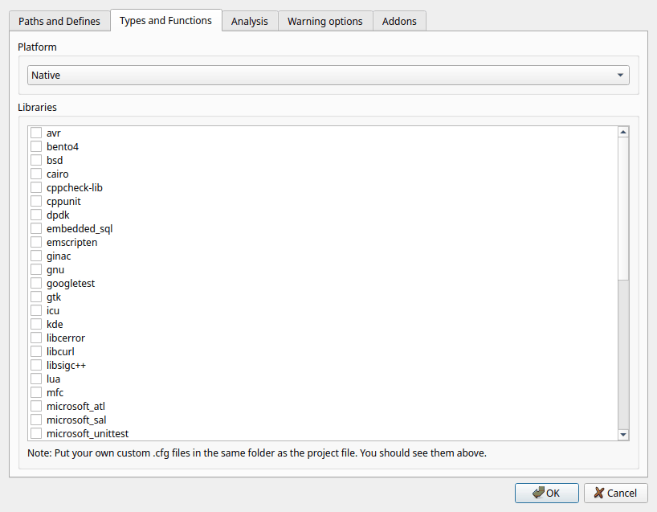
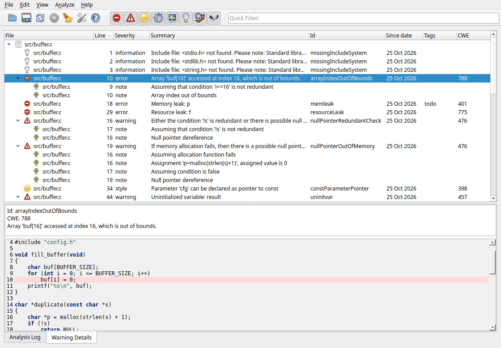
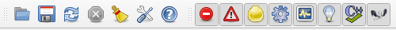
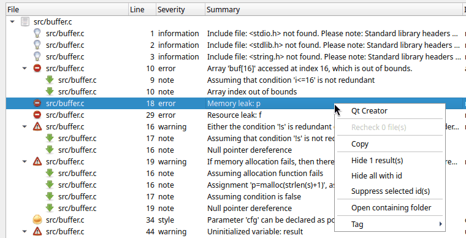

This page walks you through a first analysis: you create a project file, run the analysis and look at the results. It takes a few minutes. The other pages in this help explain each step in more detail.
Select File > New Project File... (Ctrl+Shift+N). A file dialog
asks where to save the project file. Save it in the root folder of your code,
for example next to your CMakeLists.txt or Visual Studio
solution. Paths in the project file are stored relative to the project file,
so the project keeps working if you move the whole folder or check it into
version control.
When you have chosen a file name, the Project file dialog opens. A
new project automatically gets a build dir called
<name>-cppcheck-build-dir. Cppcheck stores its work files
there; it makes repeated analysis much faster and is required for some
features. See Cppcheck build dir.
Open the Paths and Defines tab. You have two choices.
If you build your code with Visual Studio, CMake, Meson, Bear or any other tool that can produce a compile database, import it. Click Browse... next to Import Project and select one of:
*.sln, *.slnx) or
project (*.vcxproj),compile_commands.json). CMake creates it
if you configure with -DCMAKE_EXPORT_COMPILE_COMMANDS=ON,*.bpr).Cppcheck then reads the list of source files, the include paths, the preprocessor defines and the language standard from the imported file. The Paths, Include Paths and Undefines fields are disabled because the values come from the imported project.

If you can not import a project, enter the information manually:
DEBUG;VERSION=3.
Open the Types and Functions tab. In the Libraries list, check the libraries your code uses, for example posix, windows, qt, boost, gtk or sdl. A library configuration tells Cppcheck how the functions and types in that library behave: which functions allocate memory, which arguments must not be null, which functions never return, and so on. This gives you more and better warnings.
Set the Platform to the target of your code if it differs from the
computer you run Cppcheck on. This matters for portability and overflow
checks, since the sizes of int, long and pointers
differ between platforms.

The Analysis, Warning options and Addons tabs have good default values. You can come back later and change them; see Project files for a description of every option.
Click OK. The project file is saved. If the build dir does not exist yet, the GUI asks if it should create it: answer Yes.
The analysis starts immediately. A progress bar above the results shows how many files have been analyzed. You do not have to wait: warnings appear in the list as soon as they are found, and you can start looking at them. To stop the analysis, click the Stop button in the toolbar or press Esc.
The results list groups the warnings by file. Click the arrow next to a file name, or use View > Expand all, to see the warnings. Click a warning to show its details and the source code in the lower part of the window. The line with the problem is highlighted.

Some warnings have an arrow in front of them. Expand them to see notes: these show the path through the code that leads to the problem, for example where a variable got the value that later causes the bug. Click a note to jump to that line.
Use the colored buttons in the toolbar to show or hide warnings by severity. Start with errors and warnings; they are the most likely to be real bugs. See Severities.

Right-click a warning to get more options: open the file in your editor, copy the warning, hide it, suppress it or tag it.

Read Investigating warnings to learn how to work efficiently with the results.
Fix the bugs in your editor. Then click Reanalyze all files in the toolbar. Because the project has a build dir, Cppcheck only does the full analysis again for files that changed (or that include a changed header). For the other files the results are taken from the build dir, so this is fast.
If you do not agree with a warning, you can suppress it so that it is not shown again. See Hiding and suppressing warnings.
The project files you used recently are listed in the File menu. When you open a project that has a build dir, the GUI first shows the results from the last analysis. Click Reanalyze all files in the toolbar to analyze the code again. Thanks to the build dir, files that did not change are not analyzed again; their old results are reused.